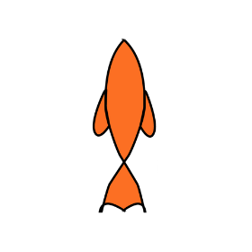
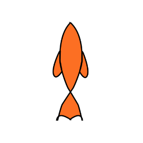

TOC-TOC!
Aquí podes encontrar información muy importante!...
Golpear puertas, hacer redes, llegar a la orilla. Encontrá datita importante de los lugares y recursos a los cuales podés acceder para que vivir no sea como ahogarse en una pelopincho.
La Agencia Nacional de Discapacidad (ANDIS) es una organización argentina que trabaja en la promoción de los derechos de las personas con discapacidad. La Agencia Nacional de Discapacidad (ANDIS) es una organización argentina que trabaja en la promoción de los derechos de las personas con discapacidad.
El Certificado Único de Discapacidad (CUD) es un documento esencial para las personas con discapacidad en Argentina. Brinda acceso a derechos y prestaciones en todo el país, incluyendo cobertura del 100% en salud, apoyos educativos y prótesis.
Asociación Civil por la Igualdad y la Justicia Trabajamos por una sociedad justa e inclusiva, capaz de revertir la pobreza y la discriminación contra grupos vulnerabilizados, que garantice a todas las personas el acceso pleno a sus derechos, a ser tratadas como iguales y a contar con instituciones democráticas y transparentes que brinden posibilidades reales de participar e influir en la toma de decisiones sobre los asuntos públicos.